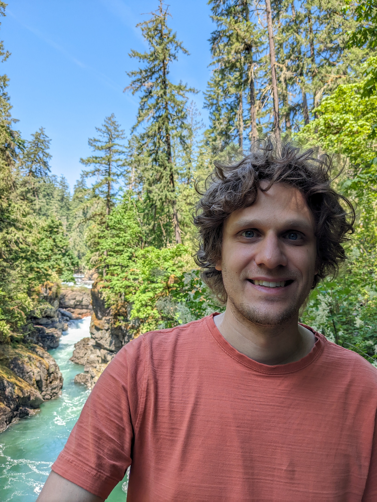

I am a postdoc at MacEwan University working with Chris Ramsey, Nicolae Strungaru and Adi Tcaiciuc.
Previously I was a postdoc at Western University working with Tatyana Barron and Masoud Khalkhali.
I obtained my PhD from the Penn State University in 2021 under the supervision of Nigel Higson.
I hold master's and bachelor's degrees from the University of Victoria where my supervisors were Heath Emerson and Marcelo Laca.
My broad research areas are operator theory and differential geometry, especially foliations and smooth groupoids.
I am a Canadian citizen.
Here is a bit more about me.
Office: Building 5, Room 107A
Email: francism29 at macewan dot ca